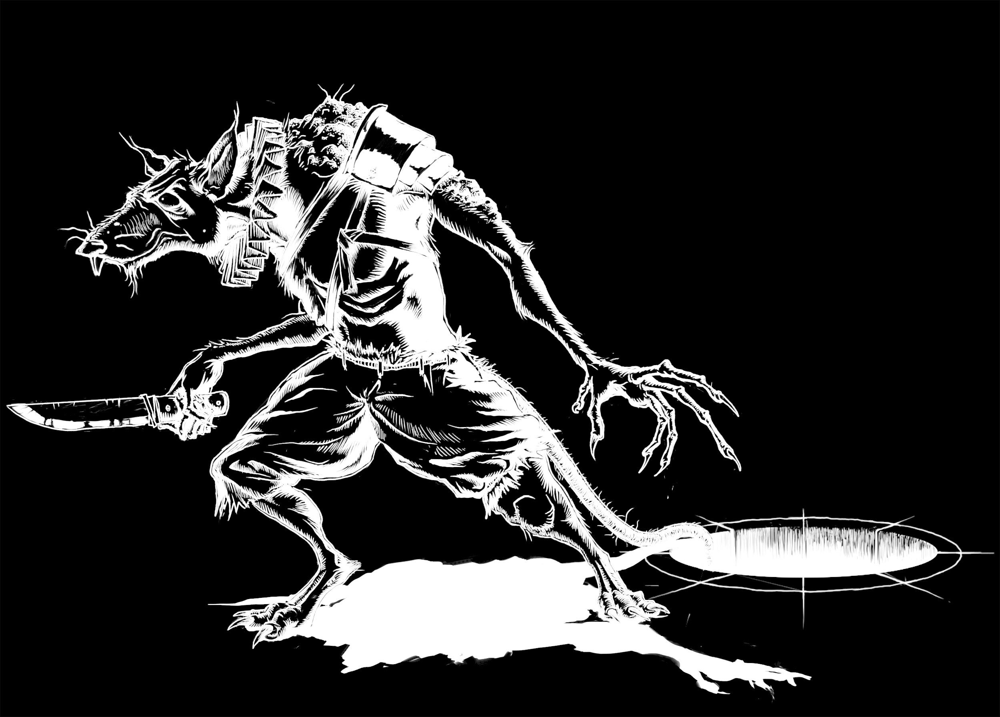

The Vermus
The vermus (or ratfolk) are a race of intelligent, rodent-like humanoids that live in the sewers and catacombs of the Undercity. Vermus stand 3-4 feet tall upright, with grey, brown or black pelts, long snouts, dark eyes and long, furless tails. Paranoid and cowardly, they avoid direct confrontation preferring to attack from the shadows.

Vermus
Small humanoid (vermus), chaotic neutral
- Armor Class
- 15 (leather armor)
- Hit Points
- 6 (2d6 - 1)
- Speed
- 30 ft.
- STR
- 7 (-2)
- DEC
- 16 (+3)
- CON
- 8 (-1)
- INT
- 8 (-1)
- WIS
- 12 (+1)
- CHA
- 8 (-1)
- Saving Throws
- Cons +1
- Skills
- Sleight of Hand +5, Stealth +5
- Senses
- darkvision 60 ft., passive Perception 14
- Languages
- Common
- Challenge
- 1/4 (50 XP)
- Keen Smell.
- Vermus have advantage on Wisdom (Perception) checks that rely on smell.
- Squirm.
- Vermus can crawl through spaces much smaller than their size (2 ft. or larger) and can pass through the space of any Medium or larger creature as though they were Tiny.
- Swarm Tactics.
- Up to two vermus allies can occupy the same space. The vermus has advantage on an attack roll if it is in a space occupied by another vermus and the vermus ally isn't incapacitated.
Actions
- Knife.
- Melee or Ranged Weapon Attack: +4 to hit, reach 5 ft. or range 20/60 ft., one target. Hit: 4 (1d4 + 2) piercing damage.